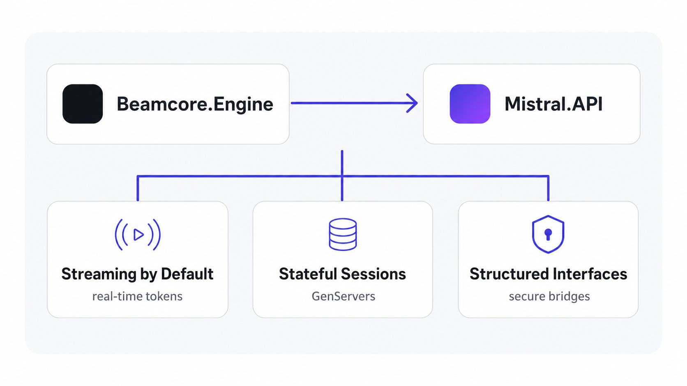

Pragmatic Cost Management
Strict financial transparency with deep understanding of token economics, inference cycles, and infrastructure overhead. Engineering decisions optimized to eliminate waste.
An AI research laboratory delivering sustainable, secure, and cost-effective engineering practices. Built on Erlang/OTP with Elixir, optimized for the Mistral ecosystem.
Engineering intelligence for the long term.
Strict financial transparency with deep understanding of token economics, inference cycles, and infrastructure overhead. Engineering decisions optimized to eliminate waste.
Security and sustainability are foundational constraints, not secondary features. No fragile, over-privileged agents in production environments.
Native actor-model concurrency on the BEAM VM. Fault tolerance via supervision trees, massive concurrency with millions of simultaneous processes, and built-in distributed communication.
CORE ARCHITECTURE
We design, optimize, and benchmark our architectures to operate natively within the Mistral AI ecosystem. State-of-the-art weights with local deployment flexibility, without compromising operational integrity or infrastructure independence.
Real-time token streaming piped directly to your terminal.
Context management handled by lightweight GenServers.
Secure, typed, low-overhead bridges to filesystems and toolchains. No arbitrary bash execution or unvalidated skills.

Enterprise-grade coding harness operating as integrated single-binary or distributed microservices across enterprise teams.

Start building production-grade AI systems today. Sustainable, secure, and cost-effective engineering with Beamcore, Elixir, and Mistral.